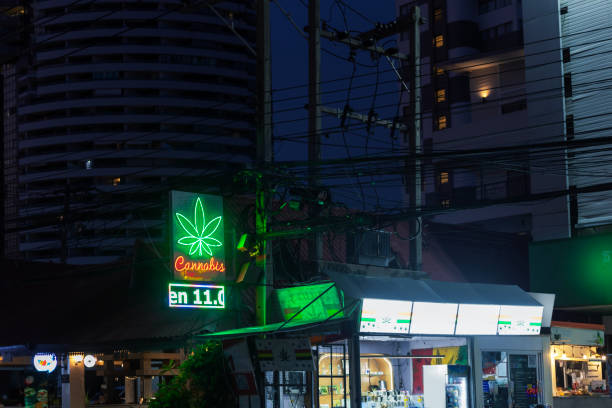

News
Sativa Strains Las Cruces
Las Cruces NM Dispensary
Sativa Strains Semantics
About Us
Las Cruces Cannabis Dispensary
What is the most popular Sativa strain at Las Cruces NM dispensary?
May 27, 2024
As a resident of Las Cruces, New Mexico, you may be wondering what the most popular Sativa strain is at your local dispensary.. With so many options available, it can be overwhelming to choose the right one for you.
What sets Sativa strains apart from other types of cannabis in Las Cruces NM?
May 27, 2024
In Las Cruces NM, Sativa strains stand out from other types of cannabis for several reasons.. Sativa plants are known for their tall and thin stature, with narrow leaves that are lighter in color compared to other cannabis varieties.
What are the effects of different Sativa strains available in Las Cruces NM dispensary?
May 27, 2024
When it comes to the effects of different Sativa strains available in Las Cruces NM dispensaries, there are a few key factors to consider.. Sativa strains are known for their energizing and uplifting effects, making them a popular choice for those looking to boost creativity, focus, and productivity.
One of the main effects of Sativa strains is increased energy levels.
What should you look for when choosing a Sativa strain at a Las Cruces NM dispensary?
May 27, 2024
When choosing a Sativa strain at a Las Cruces NM dispensary, there are several factors to consider in order to find the right fit for your needs and preferences.. Sativa strains are known for their energizing and uplifting effects, making them ideal for daytime use or when you need a boost of creativity and focus.
One important factor to consider is the THC content of the Sativa strain.
What are some recommended Sativa strains for daytime use in Las Cruces NM?
May 27, 2024
When it comes to selecting the perfect Sativa strain for daytime use in Las Cruces, NM, there are several options that come highly recommended by both local cannabis enthusiasts and industry experts.. Sativa strains are known for their uplifting and energizing effects, making them ideal for daytime consumption when you want to stay productive and focused.
One popular Sativa strain that is favored by many in Las Cruces is Durban Poison.
How to Experience a Natural High with Our Premium Sativa Strains in Las Cruces, NM
May 27, 2024
Are you looking for a way to elevate your mood and experience a natural high in Las Cruces, NM?. Look no further than our premium sativa strains.
Discover the Best Way to Elevate Your Mood and Creativity with Our Sativa Selection in Las Cruces, NM
May 27, 2024
Are you looking to elevate your mood and boost your creativity?. Look no further than our premium selection of sativa strains in Las Cruces, NM.

Uncover the Secret to Long-lasting Energy and Focus with Our Top-notch Sativa Strains in Las Cruces, NM
May 27, 2024
Are you tired of feeling drained and unfocused throughout the day?. Do you struggle to find the energy and clarity needed to tackle your daily tasks with enthusiasm?
Learn How to Enhance Your Day with a Burst of Uplifting Effects from our Sativa Collection in Las Cruces, NM
May 27, 2024
Are you looking to add some excitement and positivity to your day?. Look no further than our Sativa Collection in Las Cruces, NM.
Find Out Why Our Sativa Strains are the Perfect Choice for Socializing and Relaxing in Las Cruces, NM
May 27, 2024
When it comes to finding the perfect strain of Sativa for socializing and relaxing in Las Cruces, NM, look no further than our selection.. Our carefully curated Sativa strains are specifically chosen for their ability to enhance social interactions and promote relaxation.
Sativa strains are known for their uplifting and energizing effects, making them an ideal choice for social gatherings and activities.
Overview of Sativa strains available at Las Cruces NM dispensary
May 27, 2024
When it comes to choosing the right Sativa strain at a Las Cruces NM dispensary, there are several options available that cater to different preferences and needs.. Sativa strains are known for their energizing and uplifting effects, making them perfect for daytime use and promoting creativity and focus.
One popular Sativa strain available at dispensaries in Las Cruces is Sour Diesel.
Benefits and effects of Sativa strains for medical use
May 27, 2024
Sativa strains are known for their energizing and uplifting effects, making them a popular choice for medical use.. These strains are often recommended for patients who suffer from conditions such as depression, fatigue, and chronic pain.
One of the main benefits of Sativa strains is their ability to increase energy levels and improve mood.
Popular Sativa strains in Las Cruces NM dispensary
May 27, 2024
When it comes to popular Sativa strains in Las Cruces NM dispensary, there are a few standout options that have gained a strong following among cannabis enthusiasts.. These strains are known for their energizing and uplifting effects, making them the perfect choice for daytime use or social gatherings.
One of the most popular Sativa strains in our dispensary is Sour Diesel.
How to choose the right Sativa strain for your needs
May 27, 2024
When it comes to selecting the right Sativa strain for your needs, there are a few key factors to consider in order to make an informed decision.. Sativa strains are known for their energizing and uplifting effects, making them a popular choice for those looking to boost creativity, focus, and productivity.
The first step in choosing the right Sativa strain is to determine what specific effects you are seeking.
Reviews and recommendations for Sativa strains from Las Cruces NM dispensary
May 27, 2024
When it comes to finding the perfect Sativa strain at a Las Cruces NM dispensary, reviews and recommendations are key.. With so many options available, it can be overwhelming to know which strain will best suit your needs.